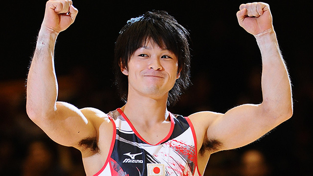

画像出典：KONAMI体操競技部
受験生はオールラウンダーたるべきか
もと器械体操部（小中学生時代）の私ですから、体操競技の動画を何とはなしに見ることもしばしば。
そんなある日、テレビ番組のレポーターに対して内村選手がこんなことを言っているのを目にしました。
「僕が目指すのは、オールラウンダーでもなくスペシャリストでもない。オールスペシャリストです」
またすごい造語が出てきたものだなと。
彼が全ての種目で本当にスペシャリスト並の実力かどうかはさておき、少なくとも内村選手レベルのオールラウンダーであって初めて言えることであることは間違いないでしょう。
さて本題ですが、受験生が受験科目においてオールスペシャリストになれれば言うことはありませんが、そう都合よくはいかないというのが実情。
そこで、オールラウンダーかスペシャリストのどちらを選ぶべきか…という選択に迫られたときにどうするべきなのか、ということです。
私見を言いましょう。
「そんなことは考えるな」が正解です。
オールラウンダーは、結果としてなるもの
入試の性質を考えてみると、大学受験なのか高校受験なのか、国公立狙いなのか私立狙いなのか、ということで有利不利は変わってきます。
例えば高校入試で国公立志望の場合、国語・数学・英語・理科・社会の総合点で合否が決まりますから、どちらかというとオールラウンダー的要素が重要になると感じるでしょう。
それは間違いではありません。
が、もともとがオールラウンダータイプである場合と、そうでないのにオールラウンダーを目指すのとではまるで意味が違うと私は断定します。
もしオールラウンダーを目指すのであれば、以下のことに注意すべきです。
- 不得意科目特訓の成果を過度に期待するな
- 得意が落ちればトータル落ちる
受験生本人というより親にこの傾向が強いのですが、
「ウチの子、いつまでも英語が足を引っ張るんですよね～どうしたらよいざんしょ！？」
みたいなこと思っていませんか？
思いますよね。
でもハッキリ言います。
不得意なものは伸びにくいです。
だって不得意なんですから。
例外として、あまりにも基本知識が欠けていた（サボりすぎた）ためにその科目がへこんでいる場合には、その穴が埋まったとたんに一気に飛躍することはありますが。
で、我々日本人はどうしても欠点を埋めようとするものですから、不得意科目に傾倒していきます。
その結果どうなるか。
不得意科目が伸びた分以上に、得意だったものが落ち込むというケースに多くの人が陥るのです。
得意なものでも、磨かなければすぐに錆びます。
私の身近な人物であるＳ教室長（私のブログに頻繁に登場していますが）の話をしましょう。
彼は週に３日は池村体操クラブにて筋トレで汗を流していますが、実は週に２回かかさずゴルフ（主に打ちっぱなしで、たまにコースに出る）。
どんなに筋トレで朝方近くなった日でも、翌日にゴルフが予定されている日にはサボりません。
なぜそこまでストイックなのよ？ と問いかけると、
彼曰く「ゴルフはたった１回サボっただけでたちまち下手になる。だからさぼれないんだ」とのこと。
それを聞いたときには「なんて大げさな…」と思ったのですが、あながちそうでもないなと思い直しました。
私もそうですが、得意でありキレがあるときこそ、サボったときのパフォーマンスの低下は激しい。
だから不得意科目に気を取られ過ぎると、悲しいことにトータルでのパフォーマンスが落ちるのです。
じゃあ不得意科目は放っておけと？
そうです、放っておけばいいんです。
ただし誤解しないで下さい。
変にあがいて他の科目より勉強量を確保するのではなく、普通にやるということです。
変にバランスを崩すより、得意を武器にした状態の方がトータルはマシですから。
しかし、もしも心理的にその科目から逃げている場合にはひと工夫が必要です。
この場合は無理やりやってもシブシブですから効果が薄いですから。
そんな場合は逆療法が功を奏す場合もあります。
すなわち、〝不得意科目勉強禁止令〟を出すのです。
あえて「君ね、好きな数学ばかりやりなさい。英語やっちゃダメ」なんて言うと、その生徒は面食らうもしばらくは言われた通りにするんです。
でも一定期間が過ぎると強烈な不安感い襲われるらしく、
「先生、お願いだから英語やらせて！」
みたいに泣きついてくることは何度もありました。
それで実際にやってみると意外に食わず嫌いだったことが分かり、一気に成績が伸びるというケースも珍しくありません。
とにかく、義務感にかられて盲目的にオールラウンダーを目指すのは得策ではありません。
気づいたらなっていた、というのなら理想です。
スペシャリストはもろ刃の剣？
一方、スペシャリストのままで突き進むのはどうなのでしょう。
私立の学校を受験するのであれば、教科を絞って集中するのは得策かもしれません。
しかし、皆が皆思うような結果にはならないのが現実です。
現場で私立志望の子どもたちを見て思うのですが、冬になって理社の受講をやめて３科に絞ったからといって、そこから実力が飛躍するかどうかは、完全に人によります。
酷い場合には、５教科まんべんなく勉強していた頃の方が３科の成績自体もマシだったなんていうことも。
これは秋口まで部活をやっている人の方が夏で引退する人より成績が上だったり、忙しくて時間がなさそうな人ほど質の高い仕事をしていることと構造は同じです。
よっぽど、それまでオールラウンドに分散させていた力を一極集中しない限り、大きな成果が望めないことがほとんどです。
だからスペシャリストはオタクじゃなきゃだめなんです。
絞るからにはそれを極める覚悟と、単に必要に迫られてやるのではなく、好きだから寝食を忘れてやっているというオタク要素がなければ極められないのです。
ただ、本当にスペシャリストになれたなら強い。
仮に国公立の入試であっても、極端に難しい科目があって、それが自分の武器と重なった場合は、不得意を補って余りあるダブルスコア・トリプルスコアぐらいのレベルで何馬身も差をつけられる場合があるのです（なぜか数学が武器の人に一発逆転のチャンスがあることが多い）。
ただし、その逆となった場合は痛い。
自分の得意科目なのに、簡単すぎて誰もが満点近くを取れてしまう試験だったら差がつきませんし、不得意な方でいつも通りの差をつけられてしまいますから。
まぁもろ刃の剣なのかもしれません。
そんないろんな可能性を踏まえたら、損得なんか考えてやっても仕方ありませんよ。
やりたいようにやるしかないじゃないですか。
本来、勉強なんて学びたいことを自由に学べばいいんですから。
おわり。
付録：体操プチ疑問にお答えします
Ｑ：子どもに体操をやらせたいのですが、身長が伸びなくなるのではと心配です。
Ａ：元体操部の池村です。これにはいろんな説がありますが、よく言われているのは「身長が高いと演技に不利だから、表舞台には残っていないだけ」というものがあります。うん、これは一理ありますね。同意。あとは筋肉がつきすぎると骨の成長を阻害するから、という説もありますが、それならばラグビーや柔道などもそうではないでしょうか。その理由よりも、体操競技特有の着地時などに自分の何倍もの体重がかかる〝衝撃〟の方が骨の伸びを妨げる原因だと個人的には考えています。
ですので、やらせたいならやらせればいいのでは？